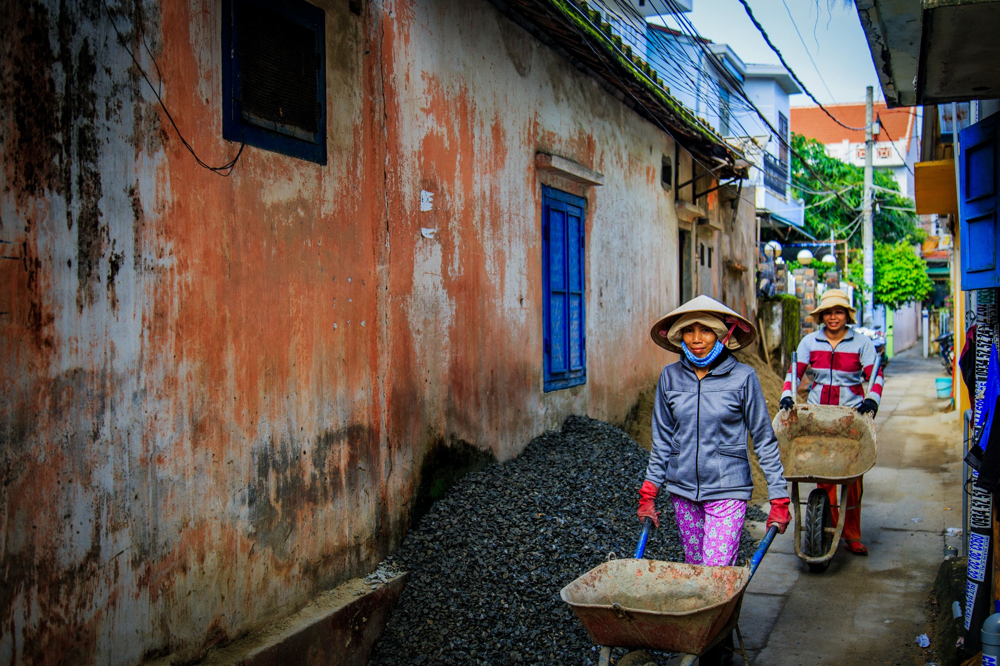

Vietnam
Vietnam
アジアの活気があふれる
魅力ぎっしりの国


 Vietnam
Vietnam
アジアの活気があふれる
魅力ぎっしりの国


92 Strand Rd., ヤンゴン ミャンマー
Building No. 19/43,
Sun Pat Street Pabedan Township, ヤンゴン
Ngwe Saung Village, Pathein Division, グエサウン, Ayeyarwaddy,